alaska流水账
一个简单的日程流水账
12.11 出发
  Josh送我们仨到LAX，飞机洛杉矶时间1:35 p.m.起飞，经停Seattle，在Anchorage当地时间7:39 p.m.落地，总时长7个多小时。落地后取租车点拿车，中间因为保险问题，因为只有我给自己在Irvine的车买了全险所以需要我转成主司机，耽搁了半小时，最后才拿到了车（注：因为我们仨都不满25岁，所以额外每天charge了一个underage的fee）。拿到车出机场的一瞬间就打滑了，时速只敢开35MPH，很怂，有点想回家。
 ## 12.12 Alaska一号公路
12号一天按照计划全天赶路去Seward，预计开两个半小时，但因为中途频繁地下车拍照（孩子属实没见过冰天雪地），所以实际上我们开了3个多小时才到。途中印象比较深刻的是有一个观景点：Rivers of Ice，我们在那里拍了很多皂片，包括自拍和移动的冰面。
三个傻子的自拍：
## 12.12 Alaska一号公路
12号一天按照计划全天赶路去Seward，预计开两个半小时，但因为中途频繁地下车拍照（孩子属实没见过冰天雪地），所以实际上我们开了3个多小时才到。途中印象比较深刻的是有一个观景点：Rivers of Ice，我们在那里拍了很多皂片，包括自拍和移动的冰面。
三个傻子的自拍：
 移动的冰面：
移动的冰面：
已经知晓视频会过期且电脑端无法播放，未来会改进此问题（12.25：已通过自建Owncloud网盘搞定https分享）。
  有意思的事情有两件：
  1.酒店本来是一张King的床加一张twin的床的配置，但因为厕所坏了，所以我们被迫搬到两个queen的床，晚上和三奇睡一张床，被疯狂折磨。
  2.晚上去吃了一家名叫seafood的店，结果发现seafood的店卖的是垃圾食品，比如汉堡薯条披萨等，点了一份油炸的bucket吃的满嘴油。
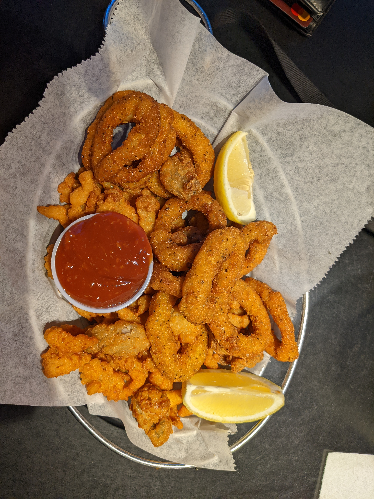
## 12.13 出海！ 13号约了Seward Ocean Excursion，我们的运气很好，天气预报下午回变天，但出海计划是早上10点开始，所以不收影响（好吧最后还是受了一点影响）。  早上起了个早，本来想去一家当地开在火车里的coffe shop吃早饭，但没开，所以只能被迫吃了Subway（很真实）。码头的风呼呼地吹，但早晨海面还泛起了晨雾（Sea fog），随手拍一张照片都横好看：


  晨雾：
  我们很幸运，13号那天只有我们仨订了票，所以相当于船被我们包了（人均200不到含税），现在回头看绝对是物超所值的体验。开船的是一位当地的小姐姐，人非常nice，一路上聊天非常开心：说了当年Seward的淘金热（至今仍有hhh），当地的海况，渔业，矿产，还有好吃的饭店，etc。
  出海之后听着小姐姐一边给我们介绍各个山峰的名字（据说大部分是当地人用他们儿女的名字命名的），一边搜寻着野生动物的痕迹，船开的不是很wavy。
  一些图片拾遗：


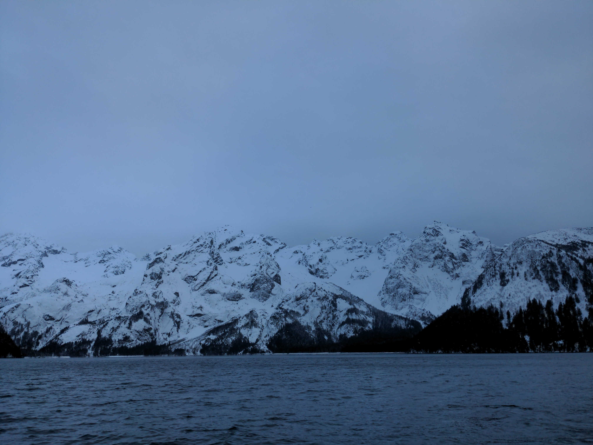
  航程开到一半，在一片远离Seward主城的海岸落脚下船，徒步了大概50m，本来想去一间州政府建的小屋落脚和上厕所，但因为积雪过厚放弃了。但是在滩涂上看到了像果冻一样的水母（海蜇？），有些可爱怎么回事！
岸上的照片：
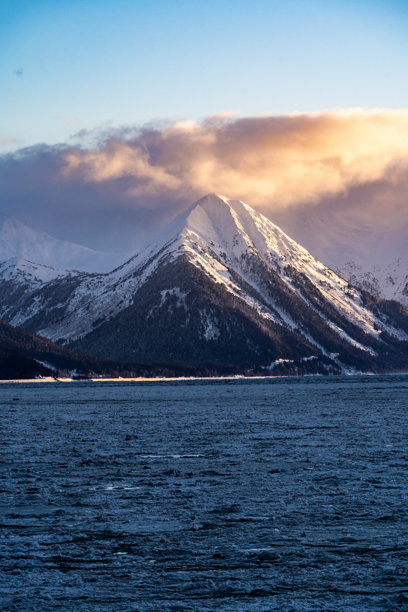
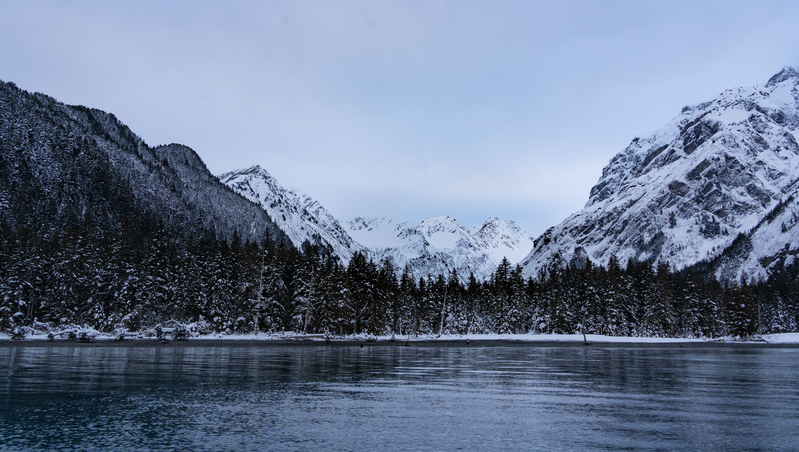
湖中景色：
  本来有希望能坐船远眺因下雪而封路的Kenai国家公园，但回程的时候天气开始变得属实糟糕，所以最后沿着海岸再开了一段到了一个冻住的瀑布就返航了，返航的路上海面开始变得波涛汹涌，但好在我们安全回到了岸上，在港口附近还看到了一只阔爱的小水獭！
Wavy的返程航路：
  下午去了一家水族馆，15刀的门票有些小贵吧（相对内容来说）。
阔爱的水母！：
  晚上找到了一家装修的很美式的店，点了taco和汉堡，记忆深刻的是点了很漂亮的鸡尾酒：
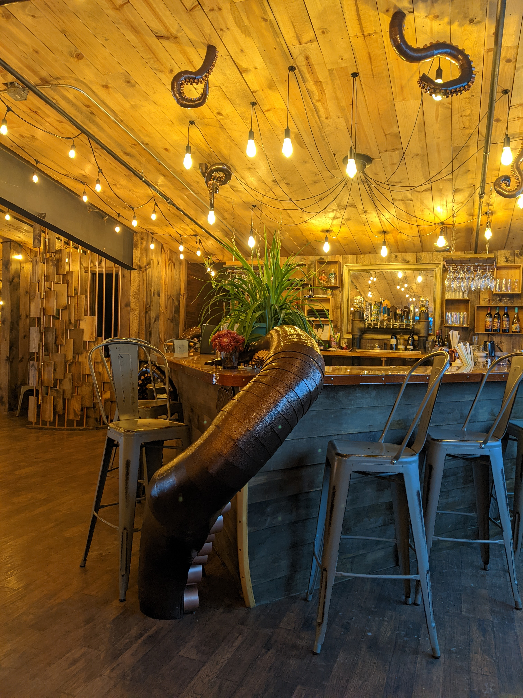
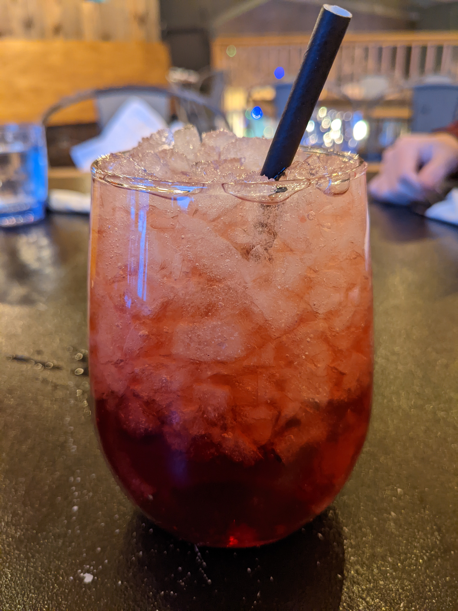
12.14 前往Talkeetna
  一天基本都在路上，开了超过200英里了，路上的一个歇脚处眺望远山还看到了彩虹：
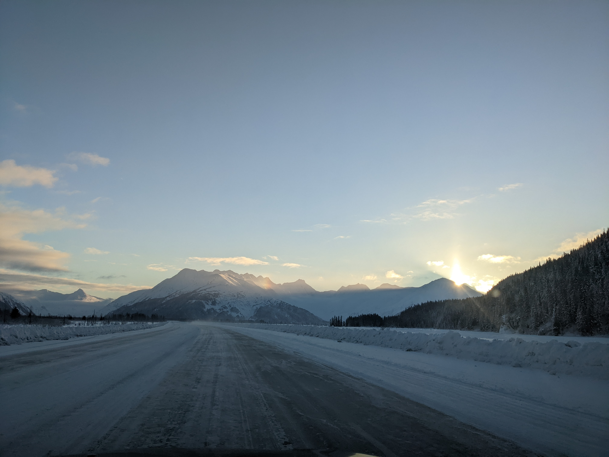
  预定的路线上有portage glacier还有whittier小镇，但到了那发现glacier关了。在交了十几刀冤枉钱以及门口等了一会之后，我们算是去世界上最宅的小镇——Whittier(好吧，我们一度以为这个小镇叫White，允悲:( )。本来的计划是去Whittier的一条Hiking Trail去徒步的，但在穿过一条狭长的隧道之后，一下车我们就发现这个地方的风大的离谱，所以在下车走了10m之后（没戳，只有10m!!!!）我们毅然决然地上车滚了出去hhhh。
  下午两点多在Anchroge的Hott Spot吃了一顿热热的泰式火锅，我们接着往北，开去飞天小镇Talkeetna，为明天的飞机之旅做准备。晚上（好吧，从时间上来说，是傍晚）喝了一杯威士忌暖暖身体就早睡了。
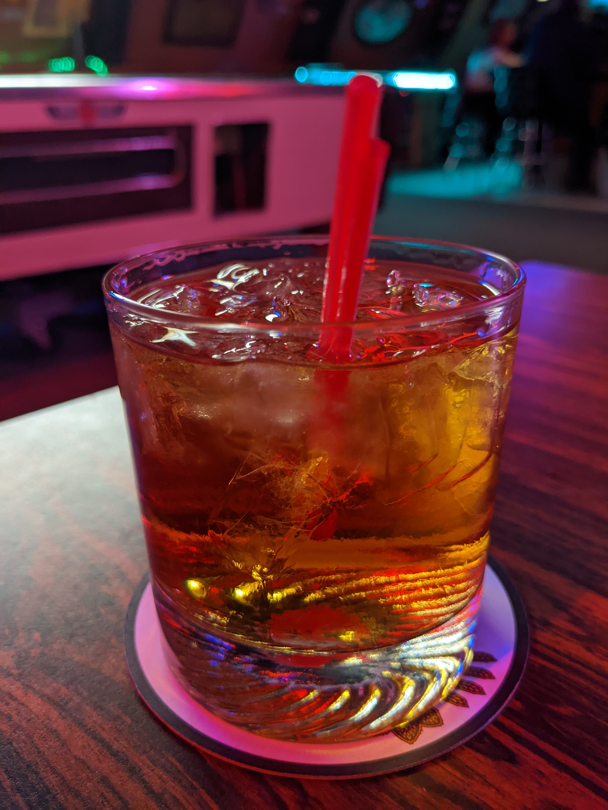
  晚上半夜12点多三奇把我和子豪拉起了床，那天晚上地磁场爆发，Kp值非常高，我们一出门就看到了远在天边的一抹极光（非常后悔但是没有抓拍下来），往人烟稀少的地带开了一些时候，但没能看到更完整的极光。谁能想到那是我们唯一一次肉眼看到的最亮的极光了呢？！
12.15 坐！飞！机！
  早上起的不是很早，11点半的飞机，但因为就在Talkeetna小镇边上，所以舒舒服服的睡到太阳升起（Alaska的太阳在这个时候都是11点左右才完全升起）。在前台签了免责声明还称了重（他要防过载！）。在当地的gift shop稍微逛了逛，买了些纪念品，就到了起飞的时候了。
礼品店里有意思的牌子：
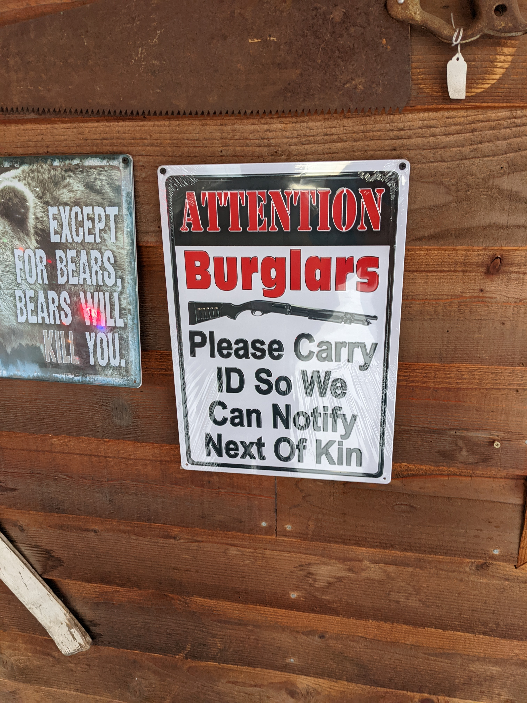
野生动物的皮毛（动保震怒）：
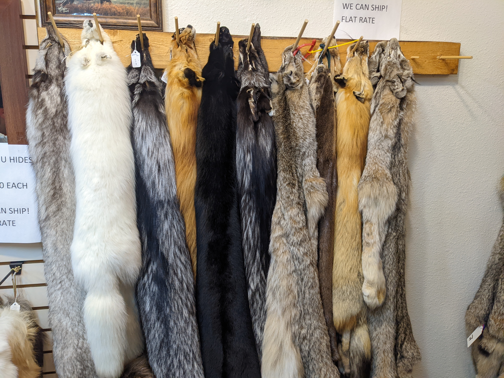
  大概12点左右飞行员带我们到了单引擎螺旋桨固定翼飞机旁边，和我们介绍这是一架二战事情服役的飞机（WTF!)，还有一些安全指示以及天气情况等等，我们就登机了。同行的有一对情侣和两位维京大哥。飞机上的空间比较狭小，我的腿没法伸直，只能一条腿搭在走道里才勉强舒服一些。
三傻的自拍：
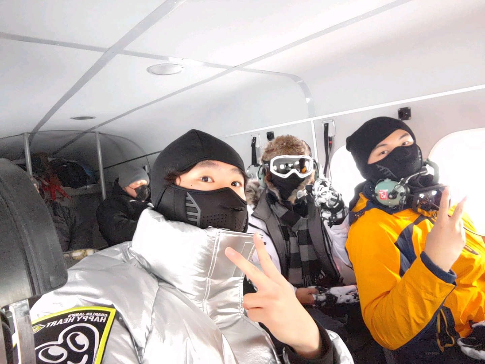
我和飞机的合影：
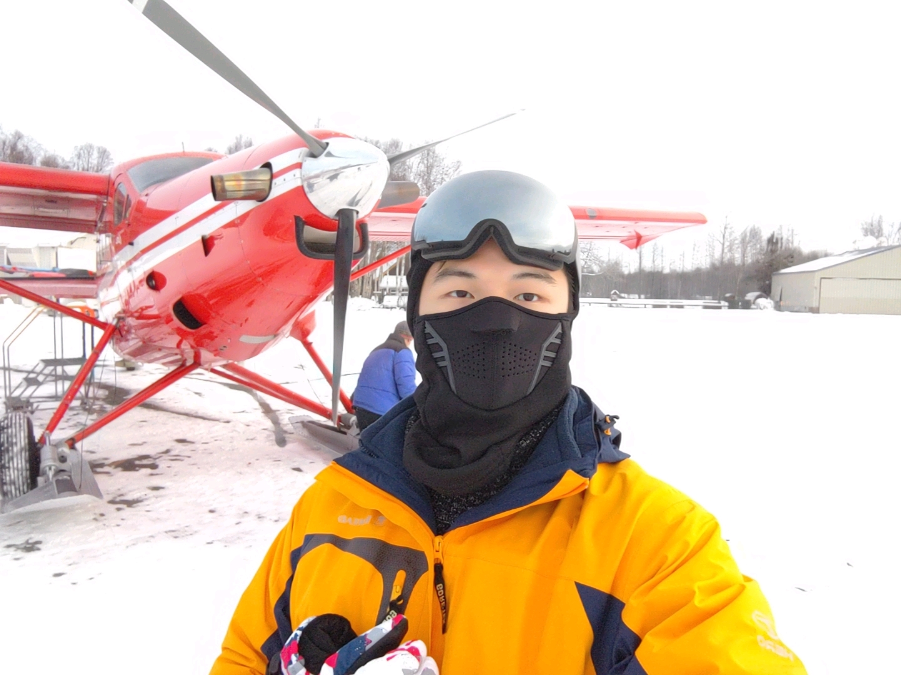
起~飞!~
  中途在飞了半个小时不到的时候我们遇到了一股强烈的气流，飞行员提醒我们会比较颠簸。我没有想到这股气流的持续时间这么长，大概持续了有10分钟以上（途中疯狂看手表看还有多久落地）。颠簸的感觉就是游乐场里面的椭圆形轨道里在最低点的超重和在最高点的失重，这样的感受在大概5-8秒的间隔里循环一次，一个不恰当的比方就是不间断的一直坐椭圆轨道过山车。中间我的心脏靠右的位置感觉有点压抑，三奇甚至直接闭上了眼睛，据他后来的说法，他当时直接估计了一下失事的概率，准备接受狗带了LOL。
  在持续了10分钟多的折磨后，飞机终于稳定了下来，我们也能开始欣赏劫后余生的窗外的景色了。
没戳，这是个冰川，被厚厚的积雪覆盖了：
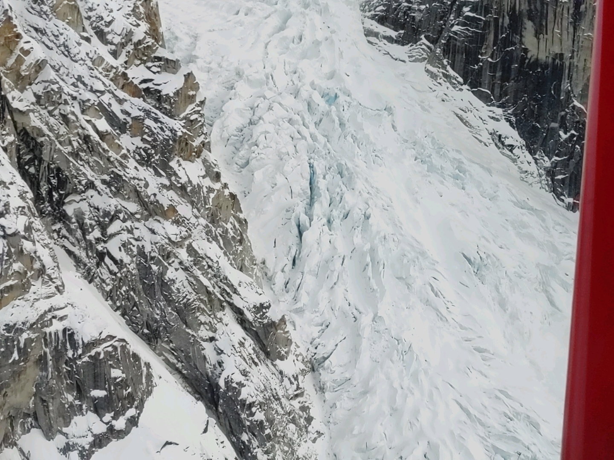
隔着舷窗拍不太出来高对比，但我保证天空的交界处有彩虹一般的颜色：
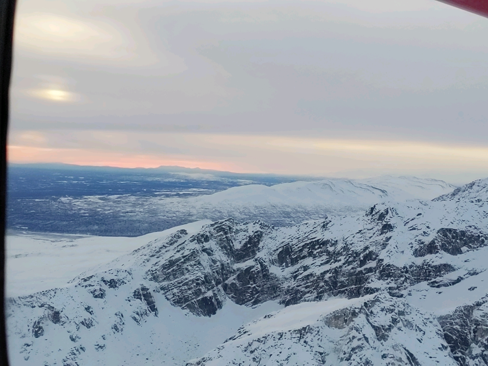
蜿蜒的雪地：
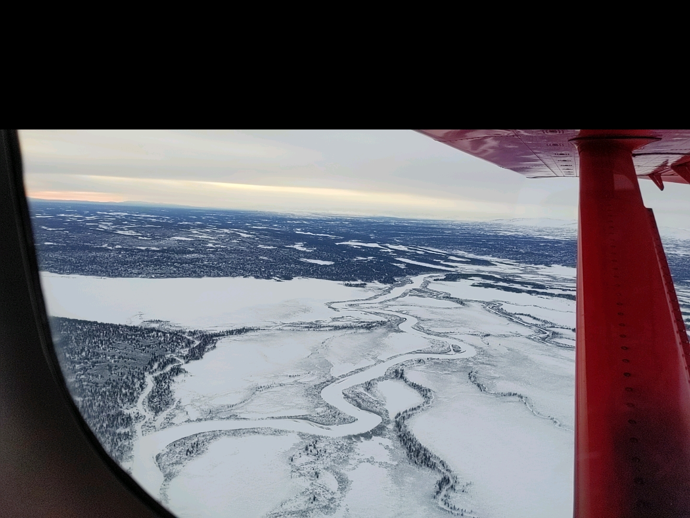
机库：

  飞机下来后下午出发前往Denali国家公园附近，大概要开5个多小时。沿途的雪山仿佛打上了冷色调，非常优雅。
路上的随拍：
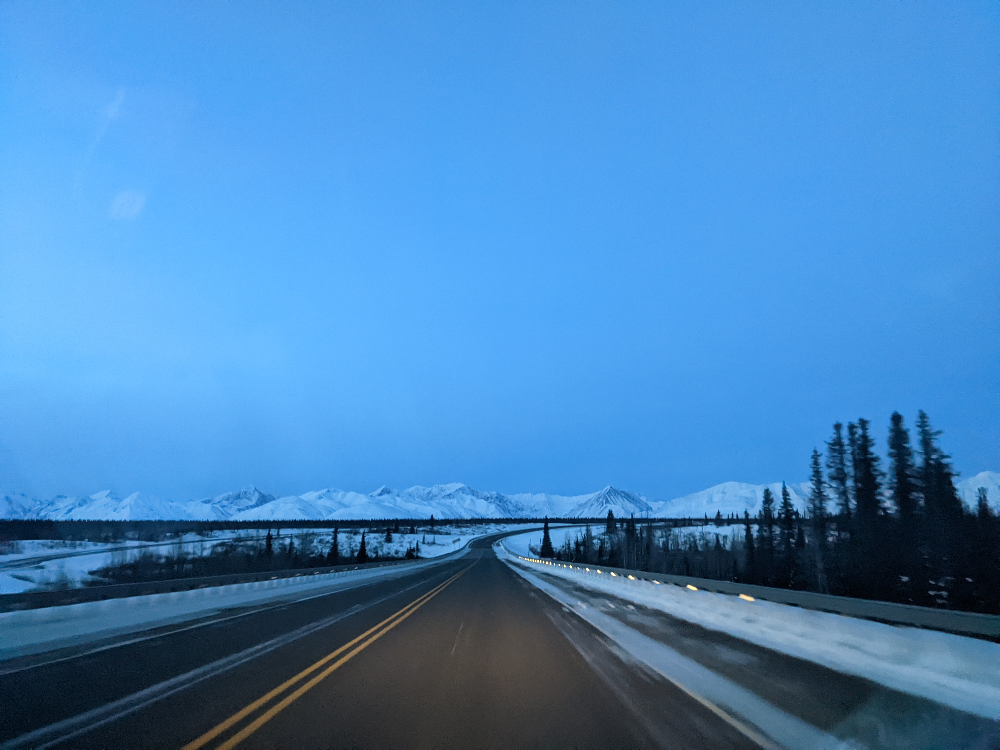

  晚上半夜才到，因为在往北开了，所以没有光照的时间特别冷。Denali外的小镇冬天餐馆几乎没有一家开门（Yelp上查到的虽然说是open，但其实都关了）。最后的最后，在旅店前台小姐姐的指导下，我们吃到了一天里的第二顿饭——披萨和意面，我们边吃边怀念Irvine的美食了。
Denali城郊的晚上温度：-30°C
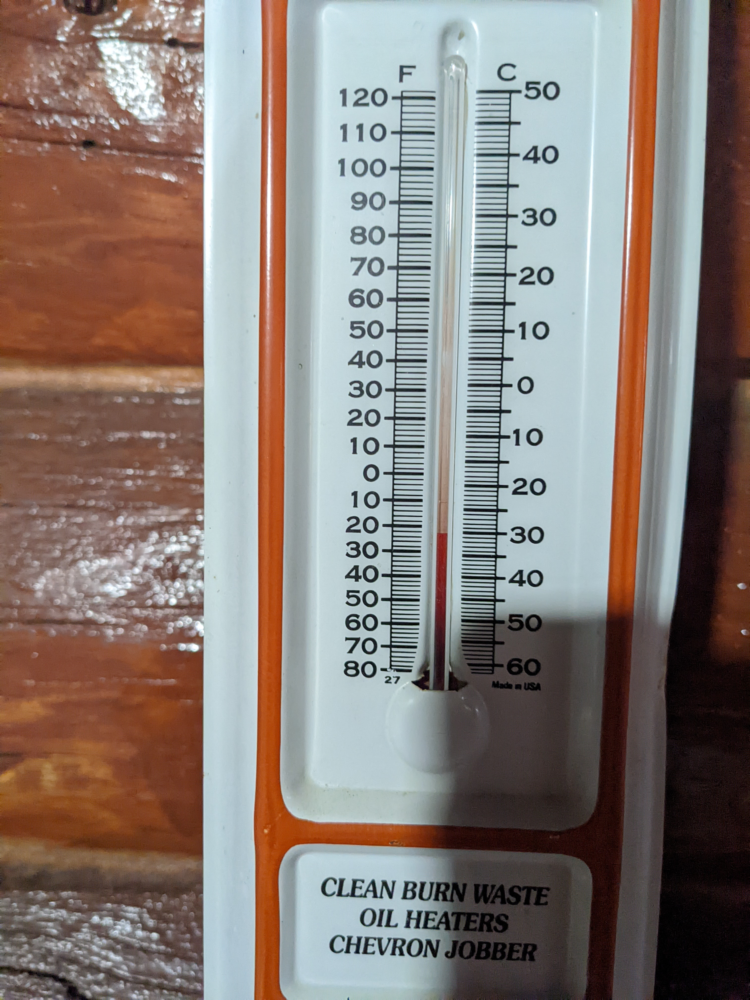
  凌晨开到了附近的一个叫otto（芜湖！）的湖边看极光，在车里玩了2个多小时的NS。在你开的时候，我抬头发现有一抹非常非常淡的光带，我们也不确定是不是极光，手机的像素不高没办法拍出来，又大又圆额月亮照着我们回旅馆的路，大概凌晨2点多我们才睡下。
12.16 去Denali国家公园游玩！
  今天的主要目标就是开车去Fairbanks，顺路在路上参观游览一下Denali国家公园，如果状况允许还想在公园里坐狗拉雪橇。前一天的路上打过电话，知道因为冬天天气过冷，旅游大巴停开了，所以没有办法走到最最里面，我们对这天的游览计划就不是很抱有希望，就打算到那什么开着就hiking一下，拍拍照然后赶路了。
Denali的入口：
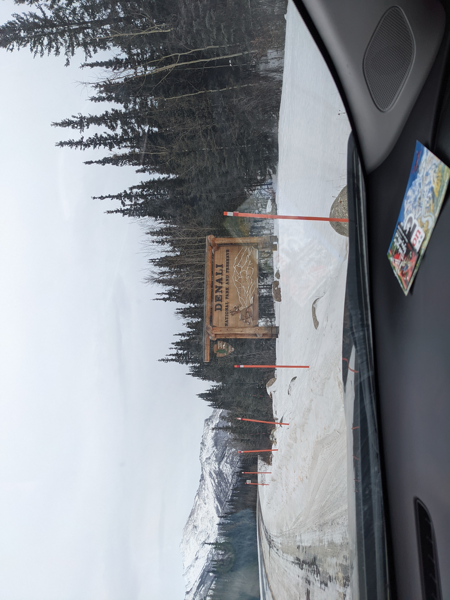
  到了以后发现确实大部分道路设施都关了，连游客中心都迁到了别处。本来我们都打算离开前往Fairbanks了，后来在一个停车场遇到了一位好心的大叔在整理面包车里的雪地车（真的刚），告诉了我们可能狗拉雪橇还开着，叫我们去试试运气。兜兜转转了半个小时，又步行了一会，找到了养狗的狗舍，负责人告诉我们当天不开门，狗拉雪橇一周只开两天，因为冬天客流少，如果要坐的话需要两天后再来。我们和他寒暄了一会，他亲切地拿了一份地图给我们，建议我们可以稍微徒步一下，附近有些trail还是很不错的。
  我们找到了附近的一条trail，夏天应该是火车的拉着游客前往山谷里的，但冬天停开了，于是我们就沿着铁路慢慢地往前走，颇有公路片的感觉。
一些记录：
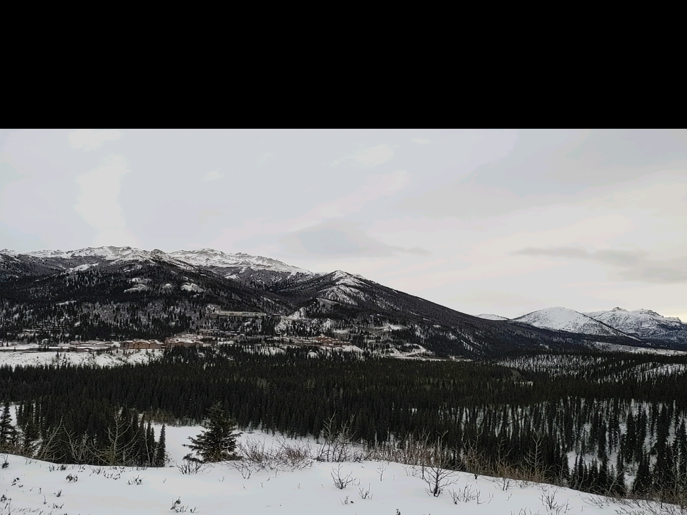
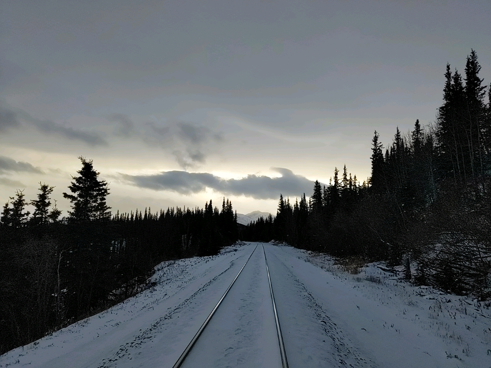
  出公园前往Fairbanks的时候，我们觉得仍未尽性，于是驱车来到了照片里的小镇，拍下一张很有公路片感觉的照片：
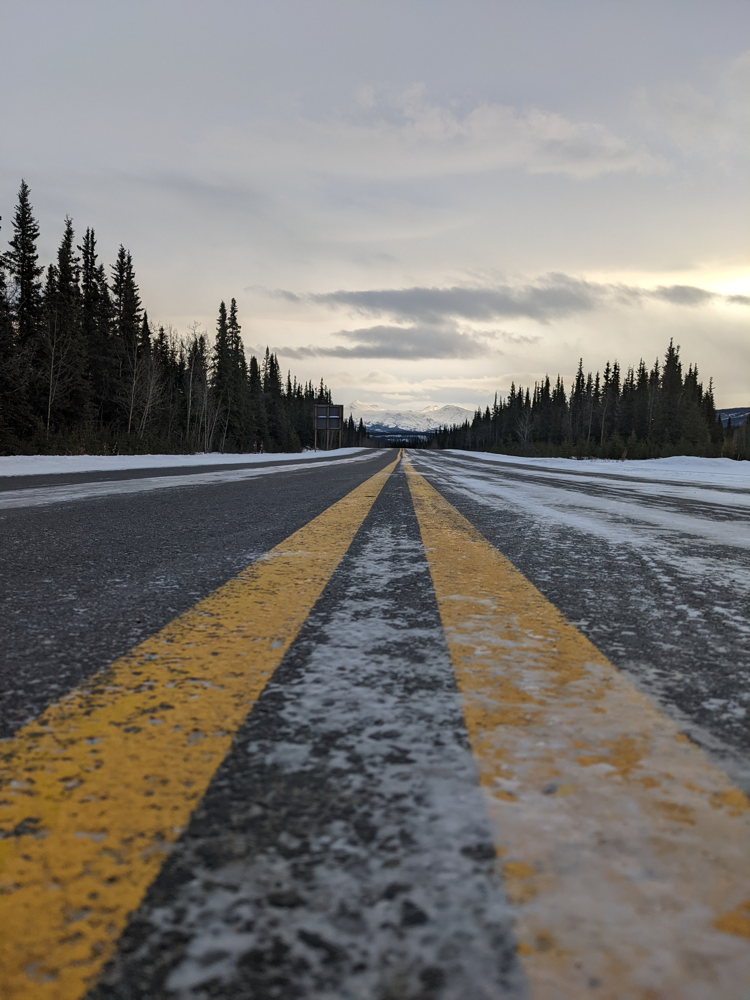
  随后我们驱车前往Fairbanks,路上还起了很大的雾，有一段时间我们只敢以不到20mile/h的速度往前挪动：
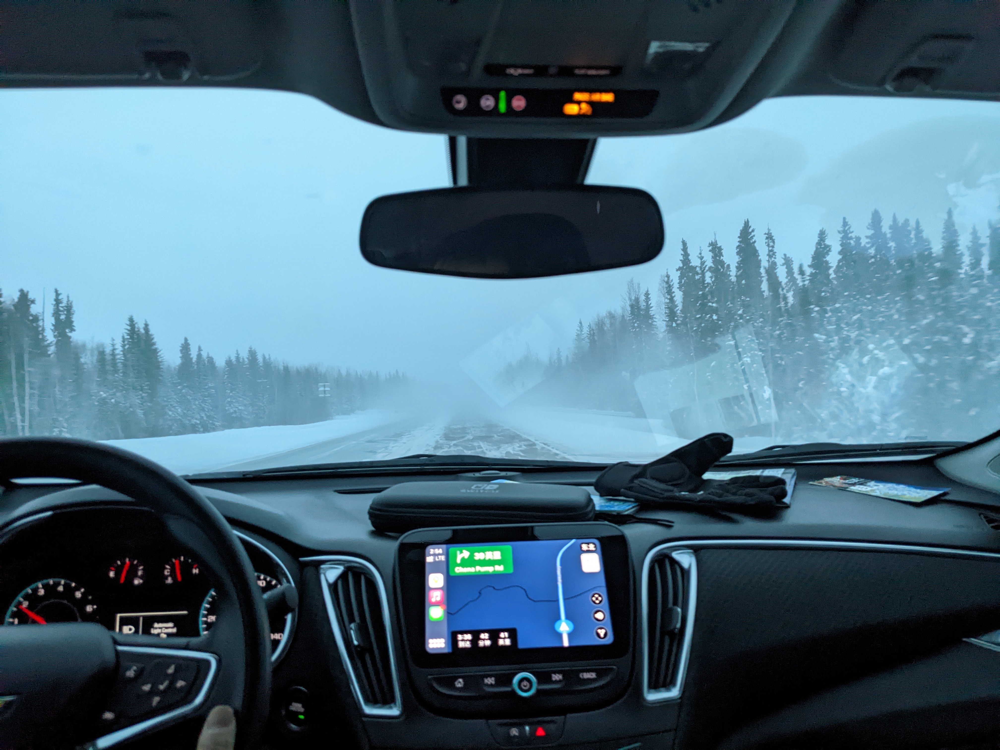
  下午终于驱车来到了Fairbanks，预定的房间是一张King和两张Twin的，因为要住三天，所以我们决定轮流睡King的床。晚上本来要去吃一家Cafeteria的，结果打电话过去才知道他们倒闭了hhhhh（后来才知道他们家好像风评很差，做的很难吃，倒闭是有理由的），最后去吃了一家叫将军的日本料理店，说是日本料理，其实就是铁板烧，在上海零几年就曾经风靡过一阵，后来就销声匿迹了，没想到在这里还活着。
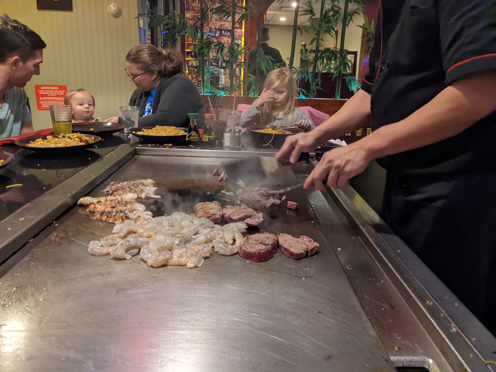
  晚上因为说雨雪天气，不能观测极光，于是我们就早睡了。
12.17 狗拉雪橇，温泉和帝王蟹！
  早上起来吃了一家小红书上推荐的早餐店：Chowder House，比目鱼汤，三明治和Roll都很好吃！最后Roll吃不了了，就打包在路上吃。
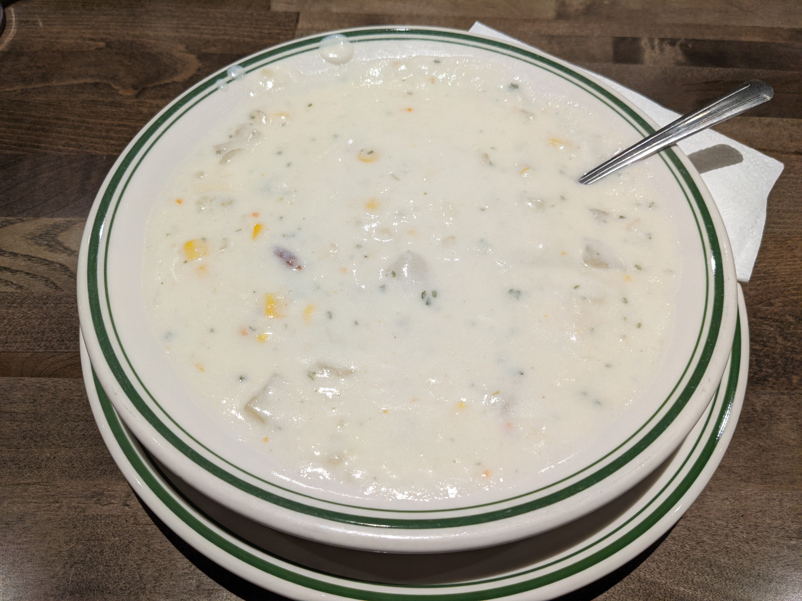
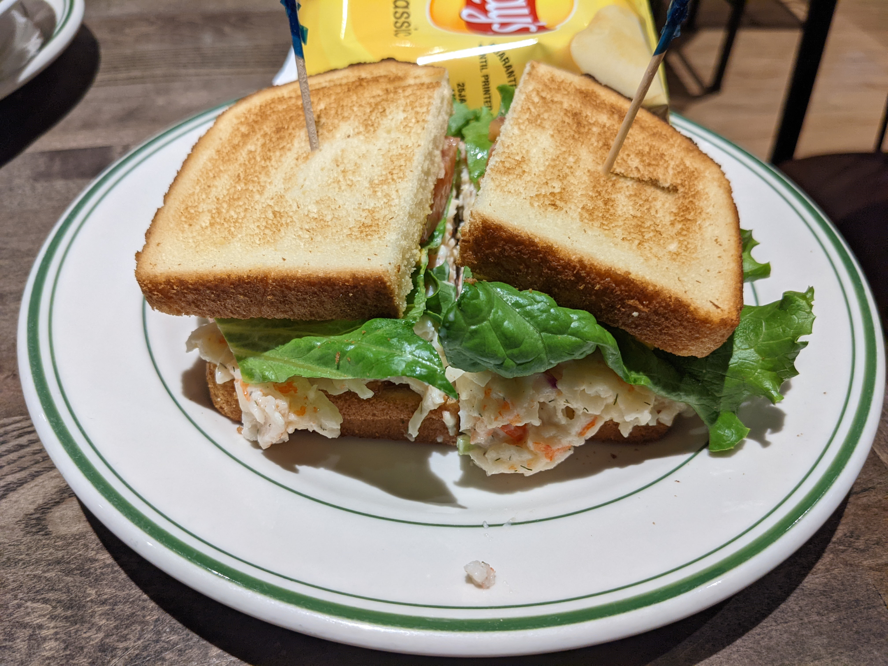
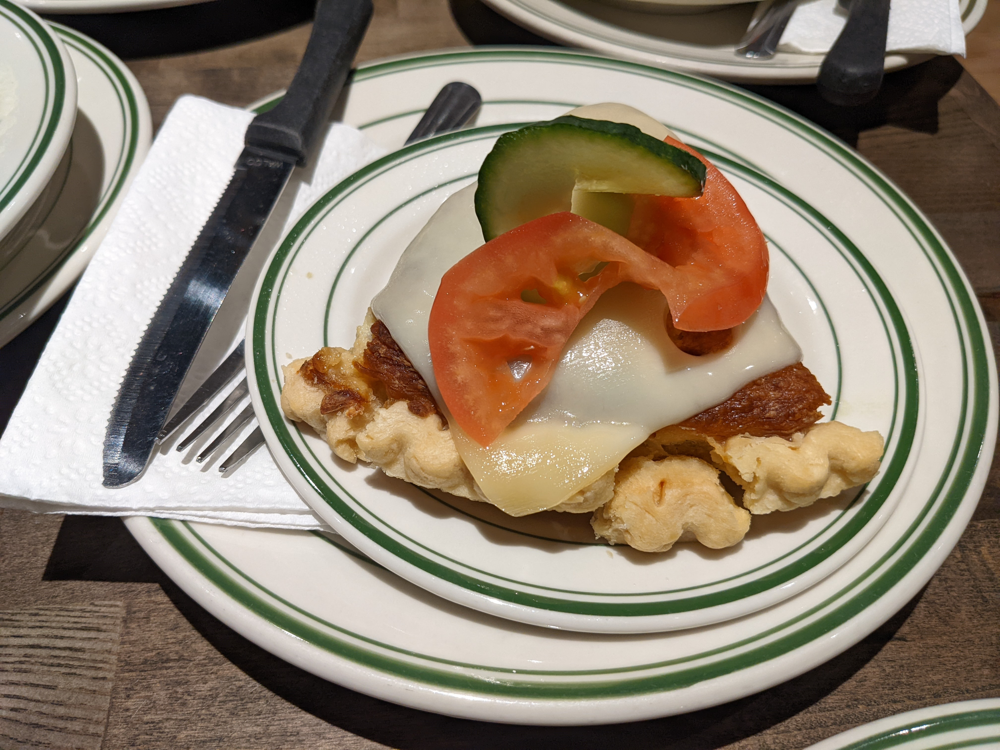
  开车前往Rod’s Alaska Guide Service坐狗拉雪橇，在门口的狗舍里和狗狗们打了个招呼：
  乘坐狗拉雪橇需要穿特制的衣服和裤子（我猜测是因为怕你摔了满地打滚的时候擦破皮），所以我门还特地换上了店家给的衣服和裤子。 以下是第一人称的雪橇体验：